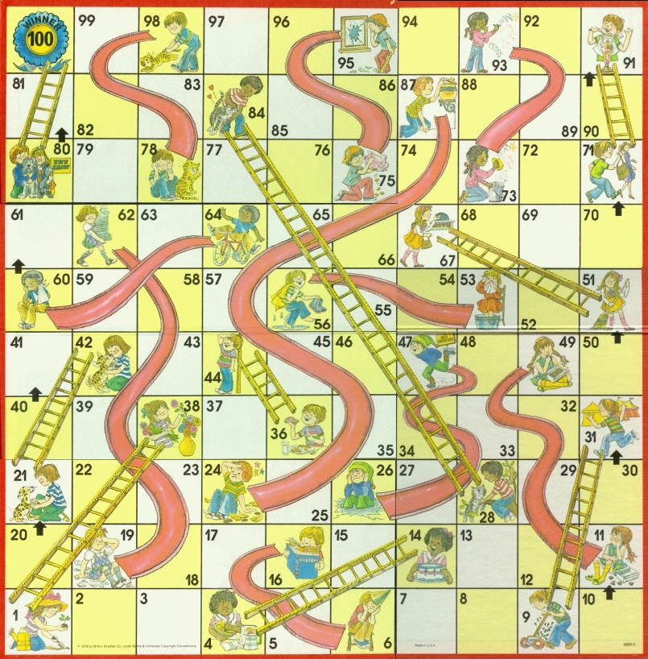

Amazing AlgorithmsFor Solving Problems in SoftwareBarry S. StahlPrincipal Engineer - AZNerds.net@bsstahl@cognitiveinheritance.comhttps://CognitiveInheritance.com |
Favorite Physicists & Mathematicians
Favorite Physicists
Other notables: Stephen Hawking, Edwin Hubble, Leonard Susskind, Christiaan Huygens |
Favorite Mathematicians
Other notables: Daphne Koller, Grady Booch, Leonardo Fibonacci, Evelyn Berezin, Benoit Mandelbrot |
Fediverse Supporter
|
 |
http://GiveCamp.org

Some OSS Projects I Run
- Liquid Victor : Media tracking and aggregation [used to assemble this presentation]
- Prehensile Pony-Tail : A static site generator built in c#
- TestHelperExtensions : A set of extension methods helpful when building unit tests
- Conference Scheduler : A conference schedule optimizer
- IntentBot : A microservices framework for creating conversational bots on top of Bot Framework
- LiquidNun : Library of abstractions and implementations for loosely-coupled applications
- Toastmasters Agenda : A c# library and website for generating agenda's for Toastmasters meetings
- ProtoBuf Data Mapper : A c# library for mapping and transforming ProtoBuf messages
Achievement Unlocked

Agenda
- 13:30 - 13:45 : Intro and Modeling
- 13:45 - 14:45 : Dynamic Programming
- 14:45 - 15:30 : Genetic Algorithms
- 15:30 - 16:00 : Break
- 16:00 - 16:30 : Best-Path Algorithms
- 16:30 - 17:00 : Cost-Minimization Algorithms
- 17:00 - 17:15 : Training ML
- 17:15 - 18:00 : Solving YOUR problems
Models are the Blueprint
|
The success of a problem-solving algorithm is often determined before the algorithm even runs -- by how the problem is modeled |
Modeling
|
|
|
Workshop Goals
|
Knapsack Problems
|
Memoization
|
Canonical Knapsack Problem

Memoization
Memoization
Memoization
Memoization
Memoization
Memoization
Memoization
Memoization
Memoization
Memoization
Memoization
Memoization
Memoization
Memoization
Memoization

Memoization
Memoization
Memoization
Memoization
Memoization
Memoization
Memoization
Memoization
Dynamic Programming
A mathematical optimization technique
- Best for solving problems that can be described recursively
- Breaks the problem into smaller sub-problems​
- Solves each small problem only once​
- Guarantees an optimal solution​
Optimization Problems
- Find the best values for a set of decision variables that​
- Satisfies all constraints
- Maximizes the features we want​
- Minimizes the features we don’t want
Simple Example - Chutes and Ladders
Chutes and Ladders - Greedy Algorithm
|

|
Dynamic Programming - Step 1
DetermineDistance(s,d)
|
Dynamic Programming - Step 2
|
Memoization

Shortest Path
Shortest Path
Shortest Path
Shortest Path
Shortest Path
Shortest Path

Shortest Path

Shortest Path
Shortest Path
Shortest Path

Shortest Path
Shortest Path
Summary - Dynamic Programming
- Populate the cache​
- Simple calculations​
- Build from the ground-up​
- Use the cached data to determine the answer(s)​
- Work backwards through the cache​
- Guaranteed Optimality​
- A fully populated cache means all options are explored​
- Works in any number of dimensions​
- Works with any graph (nodes & edges)​
- Works best when​
- Problems can be described recursively​
- 1 or more axis are limited in scope
- Works best when​
Genetic Algorithms
Find Solutions by Simulating Darwinian Evolution​
- Each candidate solution is defined by its properties (chromosomes)​
- A fitness function is used to determine which solutions "survive"
- A simulation may be used as the fitness function
- Surviving solutions may mutate and evolve other solutions​
Optimality is Never Guaranteed
- Optimal solution may never be found
- i.e. If a optimality requires a large combination of elements
- Optimum may be found but not recognized
- If conditions make that solution non-optimal at that moment
- i.e. If a key feature is not used during the simulation
- Minimize the liklihood by increasing simulation size
- If conditions make that solution non-optimal at that moment
Use Case: Game Strategy
Find the best strategy in a multi-player board game​
|
Other Model Types
|
|
|
Step 1 - Define DNA
- The DNA represents all of the possible decisions to be made
- Each chromosome represents a decision point
- Ideally a chromosome fully describes a single game state
- Each gene is an option for that decision
- If there are 3 options for a given state there will be 3 possible neuclotides for that chromosome
DNA of Chutes & Ladders

Step 2 - Setup Parameters
|
|
|
|
Genetic Algorithm
Step 3 - Run the Simulations
Options for Experimentation
- Implement in your preferred language
- C# implementation is on GitHub
- Augment to include what place the player is in
- i.e. Might make different decisions if in 1st vs in 6th place
- Define the DNA of another game
- Recommendation - stick with simpler games to start
- Avoid games like chess with massive complexity
Summary
- Genetic Algorithms "Learn" by simulating Darwinian Evolution
- The "DNA" represents the decisions that can be made
- One chromosome per condition (game state)
- One gene per option (choices from a state)
- Several parameters control how solutions evolve
- Simulations per Generation - how often the solutions change
- Fewer simulations make it more likely a less-fit solution will survive over a more-fit solution
- Error (misspelling) rate - how often each chromosome changes between generations
- Higher rates cause greater variations from generation to generation
- Selection strategy - Which solutions survive and mutate
- Survive intact - Remain unchanged to next generation
- Survive mutated - Modified versions survive to next generations
- Survive recombined - Crossover between two solutions survives
- Simulations per Generation - how often the solutions change
Best Path Algorithms
Ant Colony Optimization
Pheromones
|
Ant Colony Optimization
Ant Colony Optimization
|
Bee Colony Optimization
Types of Bees
|
Bee Colony Optimization
Bee Colony Optimization
|
Reducing Costs
Firefly Optimization
initialize n fireflies to random positions
loop maxEpochs times
for each firefly i
for each firefly j
if intensity(i) < intensity(j)
compute attractiveness
move firefly(i) toward firefly(j)
update firefly(i) intensity
end for
end for
sort fireflies
end loop
return best position found
Firefly Optimization
- Neighborhood Search
- Search the area toward best known solution
- Closer and Brighter: More Attractive
- Similar to gravity
- Tweaks
- Number of fireflies
- Range of possible values
- How fast fireflies move
- Features
- Works better for linear problems
- Optimality not guaranteed
- Can suffer from sparseness problems
Amoeba Optimization
Amoeba Optimization
initialize the amoeba with n (size) locations
loop maxEpochs times
calculate new possible solutions
contracted - midway between centroid and worst
reflected - contracted point reflected across centroid
expanded - beyond reflected point by a constant factor
if any solution is better than the current
replace worst value with best value from new solution
else
shrink (multiple contract) all lesser nodes toward the best
increment epoch count
end loop
return best position found
Amoeba Optimization
- Neighborhood Search
- Start with random locations
- Explore neighbors based on amoeba movement
- Surround the solution, then contract to it
- Tweaks
- Size of the amoeba
- > # of search dimensions
- Number of executions
- Handle local minima
- Size of the amoeba
- Features
- Optimality no guaranteed
- Can suffer from sparseness problems
What Can We Do With This Stuff?
Linear Data
Linear Regression Model
Predict the unknown values in a linear equation​
|
Error Function
The weight (m) often has a greater effect on the error than the bias (b) |
 |
Voter Model
ML Demo
Using Amoeba Optimzation to Train an ML Model
More Bio-Inspired
|
Solving Tractable Problems
Understand the Problem Deeply
Clarify inputs, outputs, constraints, and goals
Is optimality required? Can constraints be relaxed?
Identify if it can be broken into reusable parts?
Classify the Problem Type
Search? Optimization? Graph traversal? Dynamic programming candidate?
Are brute-force or exponential-time solutions feasible?
What tools do we have that can help? Can we buy vs build?
Implement and Test
Try a naive solution 1st
Use test cases to validate correctness and performance
Optimize as needed / Start over if necessary
Resources - Page 1
|
 |
Resources - Page 2
|
Solving Your Problems
|
Would you like to try to model a problem from one of your domains? |
Bonus Content
Linear Programming (LP) & Mixed-Integer Programming (MIP)
Use Case: Production Targets
|
|
|
Solution Space
Constraint Equations
- Clay Constraint
- X + 4Y <= 24 ​
- X <= 24 and Y <= 6​
- X + 4Y <= 24 ​
- Glaze Constraint
- X + 2Y <= 16​
- X <=16 and Y <= 8
- X + 2Y <= 16​
Feasible Region
Linear Programming - Polytope
Linear and Mixed-Integer Programming
|
|
Search/Optimization Models
George Dantzig - Creator of the Simplex Algorithm